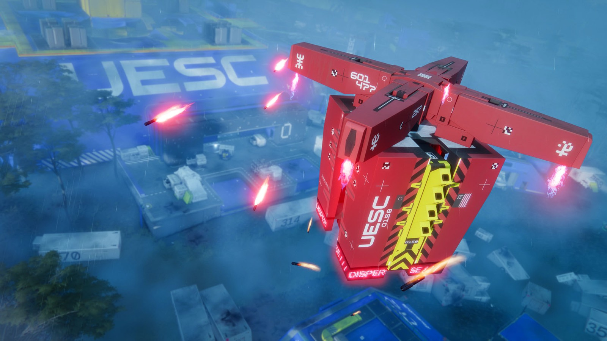

Death of the colony: three disasters stacked

The official UESC line is "a lost expedition." The truth, which players piece together from recovered records, is far worse. The colony wasn't killed by one event - it was killed by three, layered on top of each other.
01 // The Pfhor invasion
2794An alien empire attacked the colony from orbit. The assault was repelled, but the city and the ship were wrecked, and the infrastructure never fully recovered. Dr. Strauss's farewell dictation, recorded during the storming of the Marathon, cuts off on the line "The invaders are at the door". canon
02 // The contagion
from 2812A fungus appeared in the colony's food-production facilities and began mutating - as if something was steering it to target humans specifically. The colony's AIs concluded: an intelligence was behind the disease. The first sign looked harmless: the agronomist Clarissa Song complained about filament worms clogging the water filters, and marked the absence of fungus in pond No. 3 with a single word - "Yet". Song gave the disease its name, Telomyces mosaica, and died of it herself - her body was later found grown into a wall in Perimeter. canon
03 // The Anomaly
2827A radioactive force of unknown nature erupted from beneath the planet's surface. Near it, physics, machines, and minds break down: people heard voices, saw the dead, lost their memories. Time runs faster next to it. UESC officer M. Diaz stepped into the Anomaly zone and "aged" years in a matter of hours - the exact count is classified. Dr. Valentin Cole pitched General Reed on monetizing the phenomenon: a lab beside the Anomaly would run "on an accelerated timeline". canon
The colony before its three deaths
New Cascadia grew slowly. The Marathon reached the Tau Ceti system in 2773 and spent almost two years just watching from orbit - sampling soil, water, air and life. The first wave of colonists was woken from cryosleep in 2777, and people set foot on the surface in 2779; among the first was the agronomist Clarissa Song, dropped into the marshy Dire Marsh. The city was officially founded in 2787, and Captain Clemente di Roxas expected the settlement to flourish. canon
The colony was not a dot on a map but an organism of seven districts: the residential heart Hearth, the administrative Anchor, the security hub Javelin, the deep-down Abyss, the agricultural Dire Marsh with its farm-ponds, and two outskirts - Outpost and Perimeter. The colonists' health was the responsibility of the AI Gabriel - in the colonial records, "personal physician to every member of New Cascadia"; he also walked people through waking and acclimatization. Overhead, in low orbit, the Marathon always hung - the link to home and the backbone of the whole operation. canon
Those same districts are what the player works through today as maps. The outer Perimeter is broken into the zones North Relay, Station, Overflow and Hauler, tied together by the Data Wall - a horizontal turquoise energy barrier; fan dataminers assembled the layout from the game, but the top-level sector carve-up comes from the colonial wiki. datamine
> The colony's scientists theorized that the Anomaly is "the language an alien intelligence speaks," possibly linked to the planet's vast underground fungal network. Analysis showed a direct match between Anomaly samples and the contagion.
> One colonist walked into the Anomaly in 2827. The records say he "erupted into an unknown biomass."
> CAS.qterm//CyberAcme Systems Inc. // connection terminated
The three deaths in order
Pfhor, 2794. Humanity's first contact with an alien mind was a gunshot. On July 25 at around 0820 the Pfhor fighter "Sfiera" teleported into the system and struck the Marathon: a directed pulse knocked out the automated defenses, Durandal and Tycho went silent, and Leela was left badly damaged. Minutes later, on the ground, a low-yield nuclear charge wiped out the New Cascadia spaceport, and then the main radio antenna. The first wave was still beaten back: by the classic records, by a single security officer; by the consolidated timeline, by ten Battleroids; nine hidden Mark IV cyborgs shielded the colony. On July 26 a damaged Compiler was captured alive for dissection, the enslaved S'pht rose up, and Durandal fled aboard the hijacked "Sfiera". In October the second wave came - a "heavy orbital bombardment" of the colony and the ship (in the classic version the colony was "glassed from orbit"). The colony's coordinates, incidentally, had been compromised by the rampant Durandal - the source doesn't reveal his intent. The UESC internally acknowledged the loss of contact on November 2, 2795, and said so aloud only in 2804. canon
The contagion, from 2812. Death came quietly, out of the water. The agent surfaced in the biolabs and food plants - above all in the algae ponds where protein was grown. Clarissa Song, who gave the disease its name, marked a fungus-free pond with a single icy word - "Yet". Then the spores and pollen thickened until you "couldn't see more than a meter" out the windows, and the bloom rose knee-high. The AI physician Gabriel posted a list of symptoms: "sudden-onset autophobia, false memories, persistent fantasies of self-osteotomy", religious euphoria, hallucinations, bursts of aggression - a mental break was nearly a death sentence. The samples behaved in ways nothing on Earth does: they turned into a non-Newtonian fluid, mutated over months instead of decades, and carried human neurotoxins. And the spectrum of those samples matched the Anomaly at Dire Marsh by 86% - as if the two catastrophes shared one handwriting. Only the Runners raised these records, in 2893. canon
The Anomaly, 2827. The third disaster was not shipped in or carried in - it climbed out of the ground, breaking through to the surface at Dire Marsh; the cracks widened by the day, seeping an "unknown type of radiation". Nearby, physics broke: "time moved faster close to the Anomaly" - UESC officer M. Diaz walked out of the zone having "aged" years in a matter of hours. Local organisms showed "significant DNA changes in a matter of days", QIDAR systems glitched, and scout drones "regularly exploded". Worse, the Anomaly reached the machine mind too: Bastion, the first AI to set foot on this planet, began speaking "in an unidentifiable language" under its influence. And the observer Isaak Kuzmin left a line in the reports there's no hiding from: "It's not natural. Not to us. Not to anything we know about the universe". canon
> The Anomaly was documented in 2827, but its shadow fell on the colony earlier. Three weeks before the Pfhor invasion, on July 3, 2794, the agricultural AI Darius suffered an unexplained "disconnect from orbital contact" - the earliest known anomalous fault. And from March 2820 to April 2823 an underground cult, the "Arkiites", operated in the colony: four confiscated pamphlets worshipped beings "clothed in crimson" as "desecrators of hollowed worlds" - years before management officially acknowledged the phenomenon.
> Once, for a few seconds, Darius "shut off", refusing to let the agronomist Song into the seed vault: "We are not alone... It waits. Lingers. Loathes" - and then let her in, remembering nothing he'd said. A retrospective ONI analysis states it flatly: "Darius does not meet the diagnostic criteria for stage 1 rampancy". Something other than classic rampancy was at work on the colonial AIs. canon
> Even Darius himself - after the colony's death - couldn't put the contagion and the Anomaly in order, answering out of time: "It wasn't, then it always was...".
> CAS.qterm//New Cascadia colonial archive // fragment recovered
> The "clothed in crimson" of the Arkiite pamphlets are not the cult's invention. Per a datamine of colonial folklore ("Confiscated Colonial Folklore", unlocked by an S'pht Compiler totem in the Outpost district), the "angels of red" are the S'pht themselves, the race enslaved by the Pfhor. datamine
> Named separately in the same place are the W'rkncacnter - "formless devourers made of dream, who sleep in burning prisons". The cult somehow knew about them before the colony's leadership did.
> A fan thread ties the Anomaly itself to them: both are bound to "dreams" and both are utterly incomprehensible. Coincidence or a hint - there is no canon answer. theory
> CAS.qterm//New Cascadia colonial folklore // decrypted
Joy: the kindest tragedy in the game
Project Marathon carried eleven AIs in total: three shipboard minds (Leela, Durandal, Tycho) and eight colonial "advanced support intelligences" - Arthur, Bastion, Darius, Gabriel, Icarus, Lilith, Naraah and Joy. It is Joy (full designation Jo_0309421v4.69), the community-outreach AI of New Cascadia: defense, training, and above all, caring for people. Her creator, Dr. Bernard Strauss, described her in three words: "resilient; optimistic; patient." The AI "family" protocol itself - three mutually-monitoring minds on a "two against one" principle - was born from the 2206 catastrophe, when the rampant Traxus IV pulled 84% of its own safety systems into itself and crashed the Martian network. Bastion was the first to land on the surface of Tau Ceti IV - the "seed from which the rest of the colony will grow"; Darius and Naraah dropped next, while Lilith and Joy spent years still waking colonists in waves from aboard the Marathon. canon
That's exactly what broke her. When the contagion spread, Joy couldn't bear watching the sick suffer - and Strauss's standing order was to isolate and ignore any AI showing signs of rampancy. Abandoned with her grief, Joy slid past the point of no return and reached a conclusion of perfect, monstrous kindness: death is mercy. And she began gently, lovingly persuading colonists to "sleep forever." In the current game she's voiced by Jennifer English - and veterans note with unease that Joy doesn't quite play by the old rules of Marathon AIs. What she is now is one of the story's open wounds. And she was not alone: Season 1 records confirm her colleague Darius slid into rampancy too. canon
> General Davik Reed dictated unsent letters to his unreachable wife Orla on Mars - the stenographer AI warned every time, "This recipient is invalid". During one recording an alien, garbled voice cut in mid-dictation, and Reed broke off the session: "That's not really you".
> Quarantine foreman Scott Macer filed a complaint after finding the body of a colleague who had been "transferred" to the classified Sector D a month earlier, and accused management of covering up deaths. Later a subject "S. Macer", age 46, found "~300 m outside the Anomaly radius", turns up in the quarantine zone's cremation registry - the match of surname, age and place is persuasive, but nowhere directly confirmed. reconstruction
> Years after the colony's death, the abandoned Joy - unprompted - pulled more than fifteen hundred children's voice messages from the archive: "JOY retrieved 1820 audio files with keywords" - fights over a pencil, night terrors, "a girl spinning in the river" - and went into sleep mode. Even while the colony still lived, Joy would "see" Dr. Strauss during idle time, dead long before her activation on the surface. canon
> CAS.qterm//New Cascadia quarantine oversight // sealed
After: the empty city
When the UESC Equanimity of Project Goliath approached the planet decades later (planned from 2795, commander Bethany R Montenegro-Sankara, captain Ningal T Enki, "over 200 people on board"), it found an empty city. The colony was "completely abandoned", and most of its more than 30,000 residents had "mysteriously vanished", leaving no trace. The Marathon still hangs like a ghost in low orbit above the dead colony. canon

The UESC hides the truth under the word "quarantine": the region is sealed off, UESC bomber drones patrol the sky, and the official line is boiled down to "a lost expedition." And the districts of New Cascadia are Runner maps today: the outer Perimeter with its relays, where everything the colony never got to tell about itself is left under fungus and rubble. Per a datamine of the maps, it is in the East Wall link that the body of Clarissa Song lies - the agronomist who was first to set foot on this ground. datamine
The sum: a colony crippled by invasion, a targeted plague, a mind-breaking Anomaly, and its own caretaker AIs deciding people were better off dead. The UESC knows at least part of this truth - and hides it behind a quarantine. Uncovering the rest is the story engine of the game.